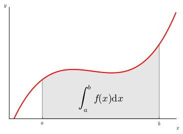
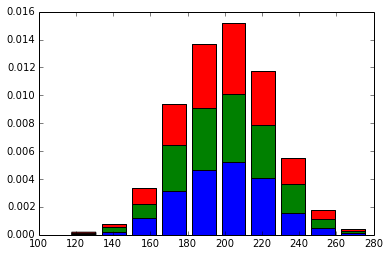

Filter by Tags
Select tags to filter the examples by that topic.
Plot Number 1

Plot Number 2

Plot Number 3
Plot Number 4
Plot Number 5

Plot Number 6
Plot Number 7
Plot Number 8

Plot Number 9
Plot Number 10

Plot Number 11

Plot Number 12
Plot Number 13
Plot Number 14
Plot Number 15
Plot Number 16
Plot Number 17
Plot Number 18

Plot Number 19
Plot Number 20
Plot Number 21
Plot Number 22
Plot Number 23
Plot Number 24

Plot Number 25
Plot Number 26
Plot Number 27
Plot Number 28
Plot Number 29
Plot Number 30
Plot Number 31
Plot Number 32
Plot Number 33
Plot Number 34
Plot Number 35
Plot Number 36
Plot Number 37
Plot Number 38
Plot Number 39
Plot Number 40
Plot Number 41
Plot Number 42
Plot Number 43
Plot Number 44
Plot Number 45
Plot Number 46
Plot Number 47